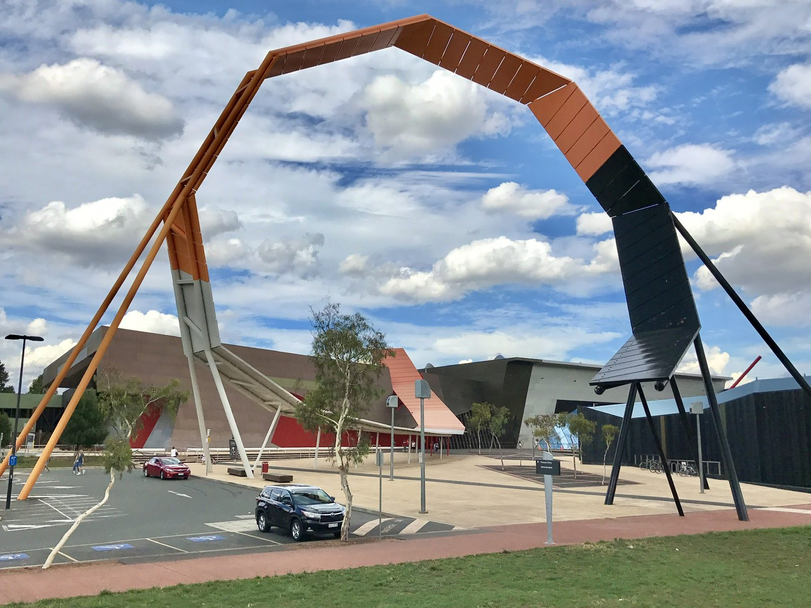

Unit 3 · Human remains · Lesson 8
Bringing it together: timed ethical argument and unit checkpoint
What do you know across the whole unit, and can you argue an ethical question from sources you have never seen, against the clock?
Year 11 Ancient History · Present with → or space · Read on a phone with R

Checkpoint · 2 minutes · the review item the class found hardest
First, one thing to fix from the last review
Why does this unit say ‘mummified person’ and ‘Ancestral Remains’?
Because these were people. Some museums (for example National Museums Scotland) now say ‘mummified person’ instead of ‘mummy’; ‘Ancestral Remains’ is a respectful term for the remains of Aboriginal and Torres Strait Islander people, and Communities may prefer others, such as ‘Ancestors’ or ‘Old People’.
Why do some bog bodies keep their skin but have soft or missing bones?
The bog’s acid dissolves the minerals in bone, while the cold, waterlogged, oxygen-poor peat preserves skin and soft tissue.
Name one non-invasive and one minimally invasive method, each with a result from this unit.
Non-invasive: X-ray or CT scanning, for example the arrowhead in Ötzi’s left shoulder, identified in 2001. Minimally invasive: a small sample for DNA, isotopes, radiocarbon or gut contents, for example Tollund Man’s last meal, a porridge of barley, pale persicaria and flax, and probably some fish (2021 study).
Which opening better answers Lesson 5’s question, Assess the significance of human remains …, and why?
(a) Tollund Man ate a porridge of barley, pale persicaria and flax, and probably some fish, shortly before he died.
(b) Human remains are most significant for understanding how individuals lived and died, but less significant, on their own, for understanding beliefs.
(b). Assess asks for a judgement of how much: (b) says what remains are most and less significant for. (a) is accurate, but it judges nothing: it belongs later, as evidence.
What is Tacitus’s Germania 12 most useful as evidence of, and what is one limit?
Roman views of Germanic customs in about 98 CE. It is weaker for bog bodies from other places or centuries: Tollund Man died about 500 years earlier, and Lindow Man lived in Britain, not Germania.
Name three stakeholders in decisions about human remains, and one interest of each.
Any three, for example: descendants and Communities (family, culture, belief) · scientists (research) · museums (care, display, education) · governments (law and heritage) · the public (learning).
Then books closed: ten questions across the whole unit.
Checkpoint · books closed · 8 minutes · press K, click 8, then Start · answer in full sentences
Ten questions across the whole unit
dot point 1 · condition, preservation, discovery and removaldot point 2 · scientific analysis and modern preservationdot point 3 · significance for life and timesdot point 4 · ethics: display, ownership, repatriation
- dot point 1Why do some bog bodies keep their skin but have soft or missing bones?
- dot point 1How was Ötzi found in 1991, and how did his recovery damage the evidence?
- dot point 2What is the difference between non-invasive and minimally invasive analysis? Give one method of each.
- dot point 2Give one result of scientific analysis for Ötzi or Tollund Man, and the method or study that found it.
- dot point 2How is Ötzi kept and displayed today, and why?
- dot point 3Name two things human remains can reveal about a person, and one thing they cannot show on their own.
- dot point 3What is Tacitus’s Germania most useful as evidence of, and why is it limited for Tollund Man?
- dot point 4Name two ethical issues in studying or displaying human remains, with an example of each.
- dot point 4What happened to Mungo Lady and Mungo Man in 2022, and how did the Traditional Owners’ views differ?
- dot point 4What is repatriation, and who decides what Cultural Knowledge about Ancestral Remains is shared?
Checkpoint · mark in a different colour · 1 mark each · both parts needed for the mark
Mark your answers: questions 1–5
| Q | Question | A strong answer |
|---|---|---|
| 1 | dot point 1 skin but no bones | Bog water is acidic, so it dissolves the minerals in bone and leaves it soft or gone; the cold, waterlogged, oxygen-poor peat (and a substance from the sphagnum moss) preserves skin and soft tissue. Both halves are needed: why skin survives, and why bone does not. |
| 2 | dot point 1 Ötzi’s discovery and recovery | Found on 19 September 1991 by two hikers, Erika and Helmut Simon, at the Tisenjoch in the Ötztal Alps, just inside Italy. Treated at first as a recent death, he was not recovered by archaeologists: on 20 September a police officer’s pneumatic drill tore his clothing and damaged his left hip, and on 23 September he was freed with ice picks, with no archaeologist present. |
| 3 | dot point 2 two kinds of analysis | Non-invasive analysis leaves the remains intact: X-ray, CT scanning, 3D imaging. Minimally invasive analysis takes small samples: for radiocarbon dating, DNA, isotopes, or stomach and gut contents. |
| 4 | dot point 2 one result and its method | Any one: an arrowhead in Ötzi’s left shoulder (an X-ray, 2001) · Ötzi’s last meal was high in fat, with wild meat (ibex and red deer) and cereals (stomach contents, 2018 study) · Ötzi’s mostly early-farmer ancestry (DNA, 2023 study) · Tollund Man’s last meal, a porridge of barley, pale persicaria and flax, and probably some fish (gut contents, 2021 study). |
| 5 | dot point 2 Ötzi today | In a cold cell at the South Tyrol Museum of Archaeology, Bolzano, at about −6 °C and 99% humidity, which imitates glacier conditions so the body does not dry out or decay. Visitors see him only through a small window. |
Checkpoint · mark in a different colour · 1 mark each · both parts needed for the mark
Mark your answers: questions 6–10
| Q | Question | A strong answer |
|---|---|---|
| 6 | dot point 3 can and cannot | Can reveal (any two): age, sex, health, diet, injuries, cause of death, ancestry, burial customs. Cannot show on their own: names or feelings; beliefs only with burial context or texts. |
| 7 | dot point 3 Tacitus as evidence | Useful for Roman views of Germanic customs in about 98 CE (in chapter 12 some offenders are sunk in a bog). Limited for Tollund Man, who died about 500 years earlier (405–380 cal BCE): Tacitus cannot simply be applied to his death. |
| 8 | dot point 4 two ethical issues | Any two, each with an example: consent (the ancient dead cannot give it) · invasive analysis (samples damage the remains) · respectful display (the Grafton head in a library glass case; in 2024 the Chau Chak Wing Museum removed Egyptian mummified body parts from display) · ownership (who owns the Grafton head? its donor is uncertain) · repatriation (Ancestral Remains returned to Country). |
| 9 | dot point 4 Mungo, 2022 | Returned to Lake Mungo in 1992 (Mungo Lady) and November 2017 (Mungo Man), they were reburied on Country on 24 May 2022. Traditional Owners were divided: some wanted reburial, others a keeping place; a Heritage NSW official said the state government “did not approve or conduct the burials”. So attribute each view to the person or group who stated it. |
| 10 | dot point 4 repatriation and ICIP | Repatriation: returning remains or cultural material to the Community or country they came from. The Custodians decide what is shared, following ICIP protocols. |
Checkpoint · 2 minutes · your score, dot point by dot point
Tally your score by dot point
| Dot point | Questions | My score | If it is low, revise |
|---|---|---|---|
| 1 · condition, preservation, discovery and removal | 1–2 | / 2 | Lesson 2: Ötzi and the bog bodies |
| 2 · scientific analysis and modern preservation | 3–5 | / 3 | Lessons 3 and 4: methods, results, display |
| 3 · significance for life and times | 6–7 | / 2 | Lessons 1 and 5: what remains reveal; Tacitus |
| 4 · ethics: display, ownership, repatriation | 8–10 | / 3 | Lessons 6 and 7: stakeholders, repatriation |
For each dot point, hold up fingers for your score when it is called. Your teacher uses the count to plan a re-teach.
Circle it. Revise it first, using the quick checks at the end of those lessons in Read mode.
Learning intentions and success criteria · 2 minutes
Today’s goals
- bring together what we have learned about human remains
- write an argument paragraph on an unseen pair of sources under time conditions
- answer retrieval questions on all four dot points
- write a timed argument paragraph that weighs two perspectives
- name my next step for extended writing
Syllabus outcomes: AH-11-05 analyses different types of sources for evidence to support a historical account or argument · AH-11-06 explains differing interpretations and representations of the past · AH-11-07 communicates historical understanding, applying historical knowledge, terms and concepts. Life Skills: AH-LS-08 uses sources to form conclusions about the past · AH-LS-11 communicates information about the past using historical terms and concepts.
Note-making · the routine for the whole course
How to structure your notes
questions and key terms, written after
short phrases, arrows (→ leads to), abbreviations (NMA = National Museum of Australia)
- 1Rule up the page firstA cue column about a quarter of the page wide; title and date at the top; room for a summary at the bottom.
- 2Listen and look, then writeDon’t copy while a slide is being explained. Phrases, not sentences.
- 3Write your own notes at each ✎ checkpointThen compare with the model notes, one row at a time. Add what you missed in a second colour.
- 4Write the cue questions afterwardsUse exam verbs: explain, analyse, assess. To revise, cover your notes and answer the cues.
- 5Finish with a three-sentence summaryOne checkpoint today, if time or at home: the source pair. Today’s main writing is a timed paragraph on lined paper, not notes.
Key vocabulary · the unit word wall, and the words today’s sources use
Words for an ethical argument
| For your argument | Meaning |
|---|---|
| Consent | Permission given freely; the ancient dead cannot give it, which raises ethical questions. |
| Stakeholder | A person or group with an interest in a decision. |
| Repatriation | Returning remains or cultural material to the Community or country they came from. |
| Custodian | A person or Community with the Cultural responsibility to care for Country, sites, Knowledge and Ancestors. |
| ICIP | Indigenous Cultural and Intellectual Property — the rights of Aboriginal and Torres Strait Islander Peoples to control their Cultural Knowledge, Practices and Property. |
| Significance | The importance of something, judged for a particular purpose. |
| For today’s sources | Meaning |
|---|---|
| Ancestral Remains | A respectful term for the remains of Aboriginal and Torres Strait Islander people; Communities may prefer others, such as ‘Ancestors’ or ‘Old People’. |
| Invasive analysis | Study that damages or removes part of the remains, such as cutting or taking samples. |
| Non-invasive analysis | Study that leaves the remains intact, such as X-ray or CT scanning. |
| policy | An organisation’s published rules for how it will act. |
| unprovenanced | With no record of where they came from, so the community they belong to is not yet known. |
1 · I do · recap · the five moves and our class checklist · cold call
What a strong argument paragraph does
Our class checklist: can you recall the five moves before they appear?
- JJudge: opens with a judgement of degreeanswers the question with a qualification: should give more weight to …, to a large extent, unless …
- EEvidence: integrates different types of evidence, with provenanceeach source introduced by who, what and when; short quotations built into your sentence
- AAnalyse: what the evidence showshow it supports the judgement, with a relating verb: suggests, presents … as, indicates
- EEvaluate: weighs a rival view before resolvinggives the other side its best evidence, then judges the reliability of both sides, with modality
- RResolve: a refined judgementon balance … and what the evidence cannot show: not a summary, not a roadmap
“Kennedy argues that removing remains harms research.”
“Tiffany Jenkins, as Maev Kennedy reported in 2010, argues that …”
Why is the first sentence wrong?
Kennedy wrote a news report; the argument is Jenkins’s. Name the person or body whose view it is, every time: the Museum’s policy states …, the Elder says …, the scientists argue …
1 · I do · the question · how to use the time
Today’s question, and your 25 minutes
How should museums weigh the scientific value of human remains against the wishes of descendants?
What does ‘weigh’ ask you to do? Deconstruct the question: verb · topic · limits · do.
Verb: weigh, not a glossary word: treat it as an assess question (department advice): judge how much each should count, and when, not simply “science” or “descendants”. Topic: scientific value against descendants’ wishes. Limits: museums; the two sources, plus evidence from the unit. Do: Judge → Evidence → Analyse → Evaluate → Resolve, opening with a degree or a condition (more weight to …, unless …), giving the strongest case on each side, and resolving with the same degree.
Attribute every view to the person or body that stated it. Say ‘Ancestral Remains’ or ‘Ancestors’. The Custodians decide what is shared, following ICIP protocols.
- 0–5Reading time: think only. Deconstruct the question (verb · topic · limits · do); read each source for its provenance; plan J E A E R, all in your head. No writing, no marking.
- clock 20–19Mark the sheet and jot your plan.
- clock 19–18Write: your Judge, a judgement of degree.
- clock 18–10Evidence and Analyse: both sources, with provenance and short quotations.
- clock 10–3Evaluate: the strongest case for science, and the limits of each source.
- clock 3–0Resolve: a refined judgement; check that it answers the question.
Reading uses the 5-minute clock; writing uses the 20-minute clock, so the writing times count down.
No notes: the source sheet only. One connected paragraph, not dot points. Your paragraph is collected.
2 · You do · timed practice · reading time · 5 minutes · press K, click 5, then Start · think only: no writing, no marking
Your sources: a museum’s policy and a news report
[section 3] The Museum recognises that Ancestral Human Remains are significant to Aboriginal and Torres Strait Islander people. [4.5, display] The Museum shall not place Aboriginal and Torres Strait Islander Ancestral Human Remains in any display … unless authorised by the relevant community/custodians. [4.7, scientific research] Scientific examinations of Aboriginal and Torres Strait Islander Ancestral Human Remains, whether invasive or non-invasive, will only be undertaken with the written consent of the relevant community, where this is possible. … No data will be made public without the consent of the relevant community in those cases. … In the case of unprovenanced remains, any external scientific research will require the approval of the Museum’s Indigenous Reference Group (IRG) … [4.10, repatriation] The Museum shall not place conditions on communities with regard to ancestral remains that are repatriated. [4.12, advice on scientific value] The Museum shall advise communities/custodians about remains that it considers to have scientific value and advise on what resources are available for their preservation.
National Museum of Australia (Canberra), Australian Aboriginal and Torres Strait Islander Ancestral Human Remains management and repatriation policy, POL-C-011, version 2.5, 24 May 2022 (first version 1996) · unprovenanced = with no record of where they came from · IRG = an Indigenous advisory group of the Museum
Kaurna Elder Major ‘Moogy’ Sumner said this repatriation was unique in that it ensures the remains will not be disturbed again. “This is about the first time this has ever happened, where our remains are honoured in this way,” he said. … “This is a first step forward, it’s knowing that we belong, and that we’ve actually been heard,” Kaurna Elder and repatriation officer Aunty Madge Wanganeed [Wanganeen] said. “We’re going to bring our old people back, we’re going to do it respectfully, and we’re going to have a place of belonging …” … Some of the remains date back to the mid to late 1800s, and many are damaged or incomplete. The South Australian Museum’s John Carty said the Kaurna community led the project to repatriate the remains. … “… so that repatriation isn’t a further violence on people and a further stress, but is actually a healing process.”
Douglas Smith and Claudia Farhart, Remains returned to Kaurna Country in unique repatriation, SBS NITV (National Indigenous Television), 7 December 2021 · on the return of more than 100 Ancestors from the South Australian Museum to the Wangayarta Smithfield Memorial Park, a purpose-built memorial site on Kaurna Country in Adelaide’s north · John Carty works for the South Australian Museum
How should museums weigh the scientific value of human remains against the wishes of descendants?
2 · You do · timed practice · write · 20 minutes · press K, click 20, then Start · no notes · your paragraph is collected
Write your argument paragraph
- Answer: How should museums weigh the scientific value of human remains against the wishes of descendants?
- One connected paragraph: Judge → Evidence → Analyse → Evaluate → Resolve.
- Use both sources, with provenance, and one example from the unit; attribute every view; end with a refined judgement.
Then add a second paragraph: weigh a scientist’s perspective against the two sources. Use the extension sheet.
| Ask | My evidence (a word, a quotation) | |
|---|---|---|
| J | My answer: how much should each count, and when? | |
| E | One short quotation from the policy, one from the report | |
| A | What does each source show? Whose view is it? | |
| E | The strongest case for science? What can each source not show? | |
| R | On balance … : my refined judgement |
Use the vocabulary list and the word bank: consent · stakeholder · repatriation · Custodians · invasive · significance.
3 · We do · the teacher’s exemplar · one press per move · then one match and one gap
An exemplar, annotated move by move
The five moves, one by one
Now yours: mark one place where your paragraph does what the exemplar does, and one gap. Write the move beside each.
3 · We do · swap with a partner · 2 minutes · then hand in your paragraph
One warm comment, one cool comment
“Your … move works because your sentence …”
“Next time, try … so that …”
Write both in the margin of your partner’s paragraph and sign your name. Comment on the argument, not the handwriting.
Your Evaluate works because you give science its strongest case, the arrowhead found in Ötzi’s shoulder, before you answer it.
Next time, try naming who said it, such as Kaurna Elder Aunty Madge Wanganeen, instead of writing that Aboriginal people say it, so that each view is attributed precisely.
Extension sheet · for your second paragraph · print it · a third perspective
A scientist’s perspective: weigh it against the two sources
Our research, published in Science Advances today, shows it is possible to determine the origin of Aboriginal Australian remains using DNA-based methods, enabling their return to Country. … These ancient genomic sequences, of known origin, were used as proxies for unprovenanced remains. … As this method requires the destruction of unprovenanced ancient bone, albeit in small quantities, it is imperative that these standards be developed in close consultation with Indigenous communities across Australia. It is essential that a consensus be reached and a decision made by Aboriginal Australians at a national level. … This is a significant shift from Aboriginal Australians being scientific subjects, as they were in the past, to them becoming researchers in their own right.
Joanne Wright, David Lambert and Sally Wasef (scientists at Griffith University), DNA from ancient Aboriginal Australian remains enables their return to Country, The Conversation, 20 December 2018 · reporting their own study in Science Advances · the article was co-authored by Gimuy Yidinji Traditional Owner Gudju Gudju Fourmile · proxies = stand-ins
Many of our ancestors still remain on foreign land, and in storage of museums and collectors. We need to do the right thing to bring them home so their spirit will rest.
Traditional Owner Gudju Gudju Fourmile (Gimuy Yidinji People, Cairns), as quoted by the authors
To what extent does the scientists’ view change your answer? Weigh it against the policy and the Elders’ words in the SBS NITV report.
Extension · HPGE · a model second paragraph · after the writing, or at home
Weighing a scientist’s perspective
Weigh the scientists’ perspective (Wright, Lambert and Wasef, 2018) against the museum’s policy and the Elders’ words in the SBS NITV report.
The scientists’ perspective complicates the opposition that the question assumes. Writing with Gimuy Yidinji Traditional Owner Gudju Gudju Fourmile in 2018, Joanne Wright, David Lambert and Sally Wasef report that DNA methods can show where remains came from, “enabling their return to Country”, so that science may serve the very wish the Elders in the SBS NITV report express, for Ancestors to be “honoured” and not disturbed again. Yet the same scientists stress that their method “requires the destruction of unprovenanced ancient bone, albeit in small quantities”, and that “a decision made by Aboriginal Australians at a national level” must come first. Their view therefore strengthens, rather than overturns, the National Museum of Australia’s rule that research needs a community’s consent: scientific value is greatest when descendants direct it. However, as researchers reporting their own study, they have reason to present it as a success, and because they tested remains “of known origin” as stand-ins, their article cannot show how well the method will work for every unprovenanced Ancestor. On balance, the scientists suggest that the real question is not how far science outweighs descendants’ wishes, but whether descendants choose to use science at all.
The moves to look for: the new perspective’s origin and purpose · its claims tested against both sources · its own limits, with modality · a decisive judgement that refines the first paragraph’s.
Notes checkpoint If time · or at home
The source pair: science and descendants’ wishes
Write your own notes first. Then compare, row by row, and add what you missed in a second colour.
Finish your notes If time · or at home
Summary: three sentences
- What does the National Museum of Australia’s policy say about scientific research on Ancestral Remains?
- What do the Elders’ words in the SBS NITV report show?
- How should museums weigh scientific value against the wishes of descendants?
The National Museum of Australia’s policy allows scientific examination of Ancestral Remains only with the written consent of the relevant community, where this is possible, while the Museum still advises communities about remains it considers scientifically valuable. In the SBS NITV report, Major ‘Moogy’ Sumner, a Ngarrindjeri and Kaurna Elder, and Kaurna Elder Aunty Madge Wanganeen present the return of more than 100 Ancestors as a matter of honour, belonging and being heard. On balance, museums should treat scientific value as advice offered to descendants rather than a claim over their Ancestors, although judgements differ where no community can yet be identified.
Exit ticket · 3 minutes · before you leave
One sentence: your next step
“My next step for extended writing is … because …”
One move from the class checklist (not ‘write better’) · the evidence for it, from your match and gap, your partner’s cool comment or the exemplar · and why it matters for answering the question. For example: My next step is to weigh the rival view before I resolve, because I named the case for science but did not judge it.
Then check yourself against today’s three “I can” statements.
Check · 2 minutes · where we go next
Next: Boudicca. Whose voices survive?
- Boudicca led a revolt of Britons against Roman rule in 60 or 61 CE (the exact date is debated).
- Written sources: two Roman historians, Tacitus (about 55–120 CE), who wrote in Latin, and Cassius Dio (about 150–235 CE), who wrote in Greek. They tell two different versions of the story.
- Archaeology: burnt destruction layers in towns the rebels attacked. But for Boudicca herself, “No grave or physical evidence is known for her” (University of Warwick).
Whose voices survive about the revolt, and whose may be missing?
Mostly Roman voices: the written accounts are by two Roman historians, one of them writing more than a century later. The Britons’ own side survives, if at all, through those Roman writers and through archaeology. Unlike Ötzi or Tollund Man, no grave or remains of Boudicca are known, so the evidence is mainly texts, archaeology and later representations, like this statue.
Today’s Judge sentence becomes your thesis: the judgement your introduction states, which every paragraph then argues and the conclusion refines.
Practice and review · 1 of 3 · true, false, justify
True or false? Justify your answer
- 1The National Museum of Australia’s policy bans all scientific research on Ancestral Remains. False — research may go ahead with the written consent of the relevant community, where this is possible (and, for outside research on unprovenanced remains, with the approval of its Indigenous Reference Group or a group it recognises).
- 2The SBS NITV report shows what all Aboriginal people think about repatriation. False — it quotes some named people: two Elders, a researcher and John Carty of the South Australian Museum. One report is not everyone.
- 3Non-invasive analysis, such as CT scanning, leaves the remains intact. True — minimally invasive methods, such as DNA or radiocarbon samples, remove a small part.
- 4Mungo Lady and Mungo Man were reburied in 2022 with the agreement of every Traditional Owner. False — they were reburied on Country on 24 May 2022, but Traditional Owners were divided between reburial and a keeping place.
- 5Tacitus’s Germania is strong evidence of how Tollund Man died. False — it is evidence of Roman views of Germanic customs in about 98 CE; Tollund Man died about 500 years earlier.
- 6In a Judge → Evidence → Analyse → Evaluate → Resolve paragraph, the Evaluate gives the rival view its strongest form before answering it. True — then the Resolve refines the judgement; it does not just repeat it.
Practice and review · 2 of 3 · writing
Sharpen the argument
Improve: “The news report says repatriation is good.” Name the speaker and say what their words present.
Quoted by SBS NITV in 2021, Kaurna Elder and repatriation officer Aunty Madge Wanganeen presents the return of more than 100 Ancestors as a sign that her community has been heard.
Write a Judge sentence that gives scientific value more weight in some cases, with a clear condition.
Scientific value can deserve considerable weight when no descendant community can yet be identified, provided that the research is approved by an Indigenous advisory group and damages the remains as little as possible.
This Resolve drifts from its Judge. Rewrite the Resolve so that it refines the Judge without changing its degree. Judge: Museums should give the wishes of descendants more weight than scientific value, unless no descendant community can yet be identified. Resolve: On balance, science matters most, so museums should keep remains for research.
On balance, the wishes of descendants should usually outweigh scientific value; research can be justified only when no descendant community can yet be identified, and even then only with an Indigenous advisory group’s approval and as little damage to the remains as possible.
Assess the National Museum of Australia’s policy as evidence of how museums treat Ancestral Remains. Reliable for what?
The policy is reliable evidence of how the National Museum of Australia says it will treat Ancestral Remains, because it is the Museum’s own approved document, revised several times since 1996. It is not, however, evidence of what this Museum or any other actually does, since a policy states intentions; and its phrase “where this is possible” shows that even its central rule on consent has limits. To test it, a historian would need reports of real returns, such as the SBS NITV account of the Kaurna repatriation, and the views of the communities concerned.
Practice and review · 3 of 3 · cover your notes and answer from memory
Quick checks
- What does the National Museum of Australia’s policy say about scientific research on Ancestral Remains? Only with the written consent of the relevant community, where this is possible; no data made public without consent; for outside research on unprovenanced remains, approval of the Museum’s Indigenous Reference Group or a group it recognises. The Museum also advises communities on remains it considers scientifically valuable.
- What do the Elders’ words in the SBS NITV report show? That for them the return honours the Ancestors, ensures they will not be disturbed again, and shows the community has been heard and belongs (Major ‘Moogy’ Sumner; Aunty Madge Wanganeen).
- Give the strongest case for scientific value, with an example. Analysis can reveal what no written source records: an X-ray found the arrowhead in Ötzi’s shoulder (2001); gut analysis showed Tollund Man’s last meal (2021). Tiffany Jenkins, as Maev Kennedy reported (2010), argues that removing displays harms learning and research.
- Who decides what Cultural Knowledge about Ancestral Remains is shared? The Custodians, following ICIP protocols.
- Name the five moves of an argument paragraph. Judge, Evidence, Analyse, Evaluate, Resolve. The Resolve refines the judgement; it is not a summary.
- Which dot point was your weakest in the checkpoint, and where will you revise it? Your tally decides: dot point 1 → Lesson 2 · dot point 2 → Lessons 3–4 · dot point 3 → Lessons 1 and 5 · dot point 4 → Lessons 6–7.
Sources and credits
Where everything comes from
National Museum of Australia, Australian Aboriginal and Torres Strait Islander Ancestral Human Remains management and repatriation policy, POL-C-011, version 2.5, 24 May 2022: the Museum’s policy page, checked against the Internet Archive copies of the PDF (March 2025) and the web page (November 2025). © National Museum of Australia; extracts quoted for teaching.
Douglas Smith and Claudia Farhart, Remains returned to Kaurna Country in unique repatriation, SBS NITV, 7 December 2021. © SBS; extracts quoted for teaching, attributed to the people the report quotes.
Joanne Wright, David Lambert and Sally Wasef, DNA from ancient Aboriginal Australian remains enables their return to Country, The Conversation, 20 December 2018 (co-authored with Gudju Gudju Fourmile). © The Conversation and the authors; extracts quoted for teaching.
Boudicca: University of Warwick, Warwick Classics Network, Ancient Sources for Boudica and Boudica’s Revolt; Historic England, list entry 1237737 (the statue). Short extracts are quoted briefly, with citations, for teaching.
Checkpoint answers: Lessons 1–7 of this unit and their sources, including the South Tyrol Museum of Archaeology (iceman.it); F. Maixner et al., Current Biology 28 (2018); K. Wang et al., Cell Genomics 3 (2023); F. Zhang et al., Nature 599 (2021); N. H. Nielsen et al., Radiocarbon 60 (2018) and Antiquity 95 (2021); Tacitus, Germania, trans. A. J. Church and W. J. Brodribb (1868, revised 1877; public domain); M. Kennedy, The Guardian, 25 October 2010 (reporting Tiffany Jenkins). The exemplar, the extension paragraph, the models and the summary were written for this lesson.
Outcomes and content: NSW Education Standards Authority (NESA), Ancient History 11–12 Syllabus (2024). © NESA.
Aboriginal Ancestral Remains appear in this lesson as text only, in the published words of the people quoted. The Custodians decide what is shared, following ICIP protocols.
- The National Museum of Australia, Canberra · Photo: Kgbo · CC BY-SA 4.0 · source
- Boadicea and Her Daughters by Thomas Thornycroft, Westminster, London · Photo: Paul Walter · CC BY 2.0 · source

.jpg){kind=link}
Both images are openly licensed and were resized for the web. Each is shared under the licence shown.